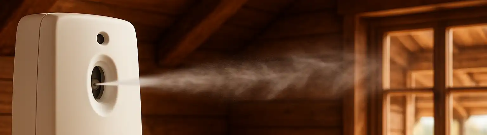

Membongkar Device Pewangi Ruangan Otomatis

Pewangi ruangan otomatis kini banyak ditemui di berbagai tempat, ya. Aromanya pun beraneka ragam dan ditawarkan dalam berbagai merk yang berbeda. Tentunya, pewangi ruangan jenis ini cukup praktis digunakan. Terutama bila kita menginginkan ruangan yang senantiasa wangi.
Apa Itu Pewangi Ruangan Otomatis?
Pewangi ruangan otomatis ini dioperasikan oleh sebuah device yang ditenagai oleh baterai. Durasi penyemprotan pewangi diatur oleh modul timer serta proses penyemprotan parfumnya dibantu oleh tuas penyemprot. Selama baterai device masih ada dayanya dan kaleng pewangi masih ada isinya, ruangan pun akan wangi secara berkala. Praktis, bukan?
Berhubung akhir-akhir ini, keluarga sedang keranjingan untuk pakai pewangi ruangan otomatis, Mas Tukang jadi penasaran modul-modul didalam device pewangi ini. Namun, sebelum mengetaui itu semua, tentunya kita perlu membongkar alatnya terlebih dahulu.
Alat yang Dibutuhkan untuk Membongkar Pewangi Otomatis
Lantas, alat apa saja yang diperlukan untuk membongkar device pewangi otomatis? Nah, pada device pewangi yang digunakan oleh Mas Tukang, kita hanya memerlukan mata obeng berbentuk segitiga. Hal ini sesuai dengan lambang mata obeng seperti yang tertera pada device pewangi.
Obeng Segitiga
Beruntung, mata obeng ini tersedia dimana-mana. Kita bisa mendapatkannya dengan membeli satu set obeng untuk handphone, yang dapat dijumpai di berbagai tempat baik toko offline maupun toko online, dengan harga cukup terjangkau. Mata obeng segitiga adalah satu mata obeng yang ada pada set alat ini.
Setelah kita menemukan mata obeng segitiga, kita tinggal membuka berbagai baut pada bagian luar alat. Setelahnya, alat bisa kita tarik perlahan dan kita pun bisa melihat modul di dalam device pewangi ruangan.
Komponen di Dalam Dispenser Parfum
Seperti yang kita lihat, berbagai jenis modul sudah terpasang dengan rapi didalam device pewangi ruangan otomatis ini. Disini, kita bisa melihat roda gerigi yang terhubung dengan modul timer serta tuas penyemprot parfum. Bila modul timer menyatakan sudah saatnya parfum disemprotkan, maka roda gerigi akan bergerak dan tuas penyemprot pun menekan bagian atas kaleng refill parfum pewangi ruangan otomaits. Bila kita lihat lebih jauh, kita bisa melihat bagian kelistrikan dari device pewangi otomatis ini.
Video Pembongkaran Device Pewangi Ruangan
Bagaimana, mudah bukan membuka device pewangi ruangan otomatis? Cukup menggunakan satu set obeng untuk handphone, kita bisa memilih mata obeng yang sesuai untuk membongkar device pewangi ruangan. Video singkat tentang mata obeng segitiga untuk membuka isi pewangi ruangan dapat dilihat dibawah ini. Semoga bermanfaat!